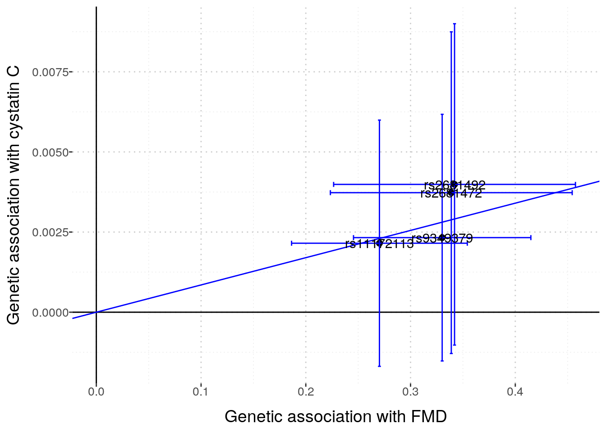
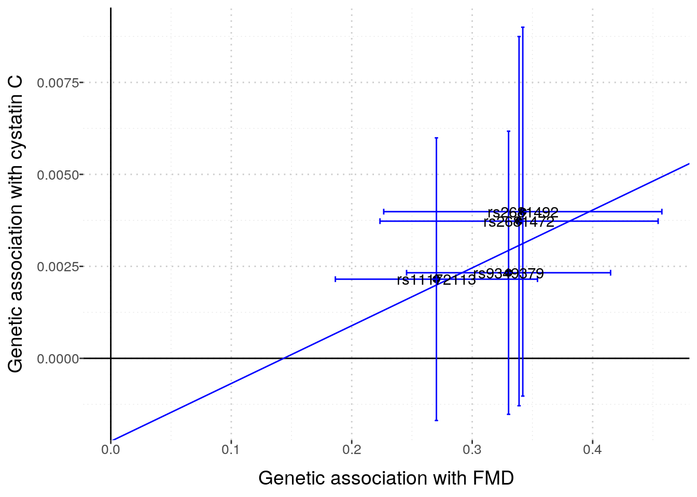
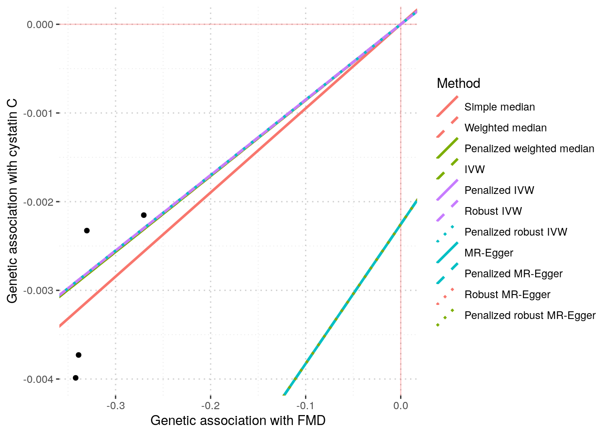
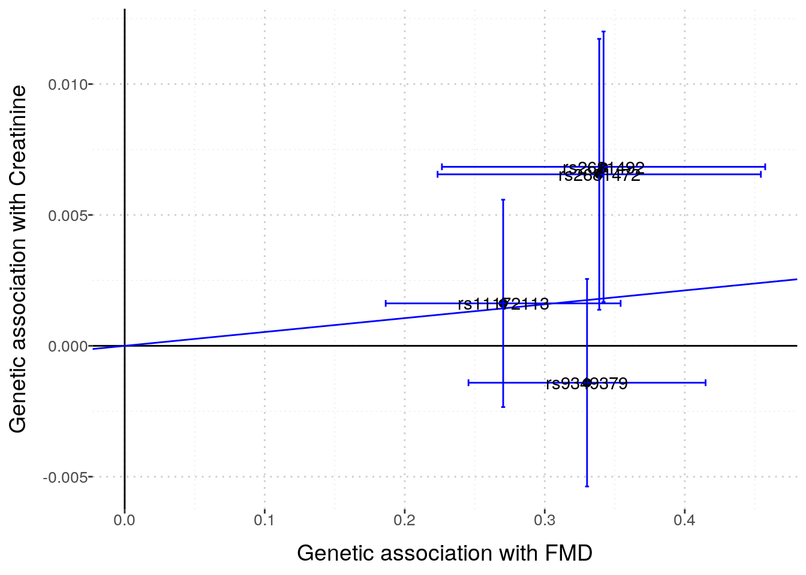
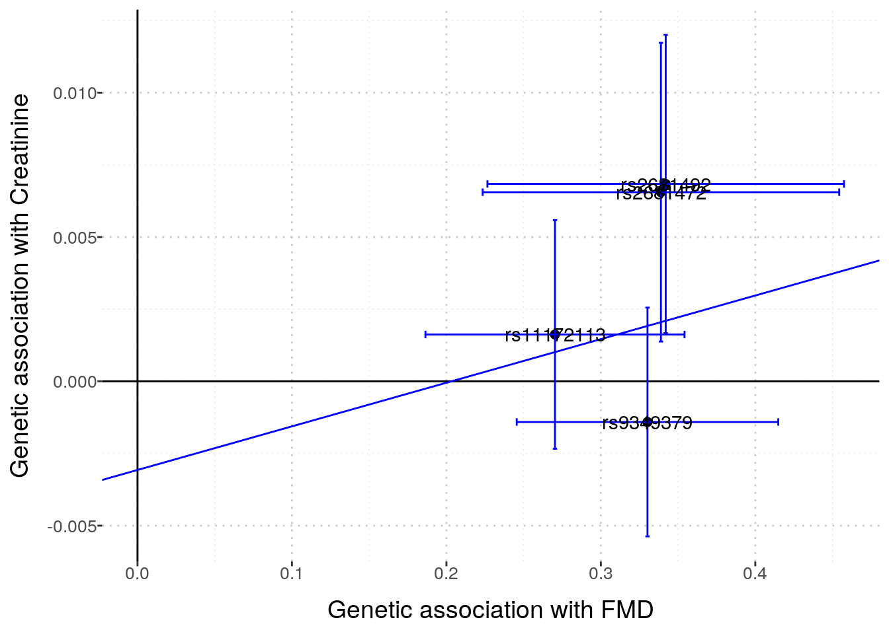
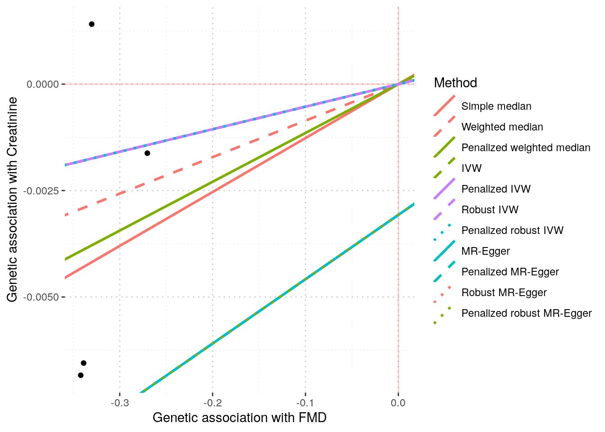

cre_file <- here::here("ukb_gwas", "biomarkers-30700-both_sexes-irnt.tsv.bgz")
cre_tib <- vroom::vroom(cre_file)Exploring the creatinine GWAS summary statistics & FMD GWAS meta-analysis summary statistics
We want to “explore” the two results files to see how many SNPs are available in each, and to see how many SNPs are in both files. This information will inform 2-sample MR studies to assess the causal effect of FMD on creatinine levels.
First, we read into R the creatinine summary statistics file.
fmd_file <- here::here("data", "fmd_meta_gwas",
"meta_analyse_FMD_FUMA_FR_MAYO_DEFINE_POL_MGI_FEIRI_HRC_all_2020-08-12.tab")
fmd_tib <- vroom::vroom(fmd_file)Rows: 6477066 Columns: 12
── Column specification ────────────────────────────────────────────────────────
Delimiter: "\t"
chr (4): MarkerName, rsID, REF, ALT
dbl (8): CHROM, POS, P, BETA, SE, N, Rsq_min, Rsq_max
ℹ Use `spec()` to retrieve the full column specification for this data.
ℹ Specify the column types or set `show_col_types = FALSE` to quiet this message.It looks like the way to identify (and, ultimately, match) markers in the two studies involves using the four columns in the Creatinine results file:
“chr”
“pos”
“ref”
“alt”
Note that the Neale Lab seems to not list an rs identifier for the markers. I need to pay attention to the genomic build that is used in both the Neale Lab analysis and in the FMD meta-analysis. Hopefully the two studies use the same genomic build, but, if not, I’ll need to account for that in the “pos” values.
fmd_tib, on the other hand, has the summary statistics in a different format. It has 12 columns in total:
“MarkerName” “rsID”
“CHROM”
“POS”
“REF”
“ALT”
“P”
“BETA”
“SE”
“N”
“Rsq_min”
“Rsq_max”
Let’s look at only Chr1 for now, just for an example.
library(magrittr)We see that there are 495,323 markers on Chr1 that are in both data sets.
How many Chr 1 SNPs are in the FMD meta-analysis?
fmd_tib %>%
dplyr::filter(CHROM == 1) %>%
dim()[1] 495398 12There are 495,398 SNPs on Chr1 in the FMD file. Thus only 75 FMD file Chr 1 SNPs are not in the Neale Lab data. It seems most likely that the two files are using the same genomic build. It’s hard to think that there would be such a high overlap rate if they used different builds. However, I still need to look at the documentation - ie, the FMD paper - to be sure about this.
Stanzick et al. 2021 data
stanzick_file <- here::here("stanzick2021", "metal_eGFR_meta_ea1.TBL.map.annot.gc.gz")
stanzick_tib <- vroom::vroom(stanzick_file)#kettunen_file <- here::here("kettunen2016", "harmonised", "GCST90132719.tsv.gz")
kettunen_file <- here::here("kettunen2016", "GCST90132719_buildGRCh37.txt.gz")
kettunen_tib <- vroom::vroom(kettunen_file)# find shared snps
#shared_snps <- intersect(fmd_tib$rsID, kettunen_tib$hm_rsid)
shared_snps <- intersect(fmd_tib$rsID, kettunen_tib$ID)
# length(shared_snps)
# there are 6.4 million shared snps!
fmd_small <- fmd_tib %>%
dplyr::filter(rsID %in% shared_snps) %>%
dplyr::filter(P < 1e-6) # choose pvalue threshold
kettunen_small <- kettunen_tib %>%
#dplyr::filter(hm_rsid %in% fmd_small$rsID)
dplyr::filter(ID %in% fmd_small$rsID)# check that effect allele is the same between the two tibbles
kettunen_small %>%
dplyr::inner_join(fmd_small, by = c("ID" = "rsID")) %>%
dplyr::mutate(harmonised = EA == ALT) %>%
dplyr::select(harmonised) %>% unlist() %>% all()# https://cran.r-project.org/web/packages/LDlinkR/vignettes/LDlinkR.html
# follow steps at above url to use LDlinkR to get LD matrix for use with MendelianRandomization R pkg
ld_token <- "3fbdb0673b22"
remove_offdiagonal_ones <- function(symm_matrix, threshold = 0.9){
nr <- nrow(symm_matrix)
bad_list <- list()
for (row in 1:nr){
foo <- upper.tri(symm_matrix, diag = FALSE)[row,]
bar <- symm_matrix[row, ] > threshold
bad_list[[row]] <- which(foo & bar)
}
bad_indices <- unique(do.call("c", bad_list))
if (length(bad_indices) == 0){
return(symm_matrix)
} else {
out <- as.matrix(symm_matrix[- bad_indices, - bad_indices])
rownames(out) <- colnames(out) <- colnames(symm_matrix)[- bad_indices]
return(out)
}
}ld_list <- list()
for (chr in 1:22){
fmd_onechr <- fmd_small %>%
dplyr::filter(CHROM == chr)
if (nrow(fmd_onechr) > 1){
foo <- LDlinkR::LDmatrix(fmd_onechr$rsID,
pop = "CEU",
r2d = "r2",
genome_build = "grch37",
token = ld_token,
file = FALSE
)
bar <- foo %>%
dplyr::select(-1) %>%
as.matrix() %>%
remove_offdiagonal_ones()
# remove rows & cols for highly correlated SNPs
# (ie, LD > 0.95)
ld_list[[chr]] <- bar
}
if (nrow(fmd_onechr) == 1){
ld_list[[chr]] <- as.matrix(1)
colnames(ld_list[[chr]]) <- fmd_onechr$rsID
}
if (nrow(fmd_onechr) == 0){
ld_list[[chr]] <- NA
}
}
# remove NAs
ld_list_nona <- ld_list[!is.na(ld_list)]
ld_mat <- as.matrix(Matrix::bdiag(ld_list_nona))
rn <- do.call(c, lapply(ld_list_nona, colnames))
rownames(ld_mat) <- rn
colnames(ld_mat) <- rninput <- MendelianRandomization::mr_input(
bx = fmd_small$BETA[fmd_small$rsID %in% colnames(ld_mat)],
bxse = fmd_small$SE[fmd_small$rsID %in% colnames(ld_mat)],
#by = kettunen_small$beta[kettunen_small$hm_rsid %in% colnames(ld_mat)],
by = kettunen_small$beta[kettunen_small$ID %in% colnames(ld_mat)],
#byse = kettunen_small$standard_error[kettunen_small$hm_rsid %in% colnames(ld_mat)],
byse = kettunen_small$se[kettunen_small$ID %in% colnames(ld_mat)],
corr = ld_mat,
exposure = "FMD",
outcome = "creatinine",
snps = rownames(ld_mat)
)MendelianRandomization::mr_ivw(input)MendelianRandomization::mr_plot(input)Barton Cystatin C
barton_file <- here::here("data", "barton2021_cystatinC", "GCST90025945_buildGRCh37.tsv")
barton_tib <- vroom::vroom(barton_file)Rows: 5515075 Columns: 15
── Column specification ────────────────────────────────────────────────────────
Delimiter: "\t"
chr (2): ALLELE1, ALLELE0
dbl (13): chromosome, base_pair_location, GENPOS, A1FREQ, INFO, CHISQ_LINREG...
ℹ Use `spec()` to retrieve the full column specification for this data.
ℹ Specify the column types or set `show_col_types = FALSE` to quiet this message.# find shared snps
small_dat <- fmd_tib %>%
dplyr::inner_join(barton_tib, by = c("CHROM" = "chromosome", "POS" = "base_pair_location")) %>%
dplyr::filter(P < 1e-8) # choose pvalue threshold
# harmonised?
small_dat %>%
dplyr::filter(REF == ALLELE0) # same 7 rows# A tibble: 5 × 25
MarkerName rsID CHROM POS REF ALT P BETA SE N Rsq_min
<chr> <chr> <dbl> <dbl> <chr> <chr> <dbl> <dbl> <dbl> <dbl> <dbl>
1 6:1290395… rs93… 6 1.29e7 A G 2.04e-14 -0.330 0.0432 9062 0.815
2 12:575272… rs11… 12 5.75e7 T C 2.64e-10 -0.270 0.0428 9062 0.875
3 12:900089… rs26… 12 9.00e7 A G 8.68e- 9 -0.339 0.0589 9062 0.968
4 12:900130… rs26… 12 9.00e7 T C 6.52e- 9 -0.342 0.0589 9062 0.968
5 12:900605… rs17… 12 9.01e7 G A 5.92e- 9 -0.344 0.059 9062 0.985
# … with 14 more variables: Rsq_max <dbl>, GENPOS <dbl>, ALLELE1 <chr>,
# ALLELE0 <chr>, A1FREQ <dbl>, INFO <dbl>, CHISQ_LINREG <dbl>,
# P_LINREG <dbl>, beta <dbl>, standard_error <dbl>, CHISQ_BOLT_LMM_INF <dbl>,
# P_BOLT_LMM_INF <dbl>, CHISQ_BOLT_LMM <dbl>, p_value <dbl>ld_list <- list()
for (chr in 1:22){
fmd_onechr <- small_dat %>%
dplyr::filter(CHROM == chr)
if (nrow(fmd_onechr) > 1){
foo <- LDlinkR::LDmatrix(fmd_onechr$rsID,
pop = "CEU",
r2d = "r2",
genome_build = "grch37",
token = ld_token,
file = FALSE
)
bar <- foo %>%
dplyr::select(-1) %>%
as.matrix() %>%
remove_offdiagonal_ones(threshold = 0.99)
# remove rows & cols for highly correlated SNPs
ld_list[[chr]] <- bar
}
if (nrow(fmd_onechr) == 1){
ld_list[[chr]] <- as.matrix(1)
colnames(ld_list[[chr]]) <- fmd_onechr$rsID
}
if (nrow(fmd_onechr) == 0){
ld_list[[chr]] <- NA
}
}
LDlink server is working...# remove NAs
ld_list_nona <- ld_list[!is.na(ld_list)]
ld_mat <- as.matrix(Matrix::bdiag(ld_list_nona))
rn <- do.call(c, lapply(ld_list_nona, colnames))
rownames(ld_mat) <- rn
colnames(ld_mat) <- rnsmall_dat_no_ld <- small_dat %>%
dplyr::filter(rsID %in% rownames(ld_mat))input <- MendelianRandomization::mr_input(
bx = small_dat_no_ld$BETA,
bxse = small_dat_no_ld$SE,
by = small_dat_no_ld$beta,
byse = small_dat_no_ld$standard_error,
corr = ld_mat,
exposure = "FMD",
outcome = "cystatin C",
snps = rownames(ld_mat)
)MendelianRandomization::mr_allmethods(input) Method Estimate Std Error 95% CI P-value
Simple median 0.009 0.004 0.001 0.018 0.021
Weighted median 0.009 0.004 0.001 0.017 0.037
Penalized weighted median 0.009 0.004 0.001 0.017 0.037
IVW 0.009 0.004 0.001 0.016 0.030
Penalized IVW 0.009 0.004 0.001 0.016 0.030
Robust IVW 0.009 0.004 0.001 0.016 0.030
Penalized robust IVW 0.009 0.004 0.001 0.016 0.030
MR-Egger 0.016 0.038 -0.059 0.091 0.681
(intercept) -0.002 0.012 -0.026 0.021 0.850
Penalized MR-Egger 0.016 0.038 -0.059 0.091 0.681
(intercept) -0.002 0.012 -0.026 0.021 0.850
Robust MR-Egger 0.016 0.038 -0.059 0.091 0.681
(intercept) -0.002 0.012 -0.026 0.021 0.850
Penalized robust MR-Egger 0.016 0.038 -0.059 0.091 0.681
(intercept) -0.002 0.012 -0.026 0.021 0.850MendelianRandomization::mr_egger(input, correl = ld_mat)
MR-Egger method
(variants correlated, random-effect model)
Number of Variants = 4
------------------------------------------------------------------
Method Estimate Std Error 95% CI p-value
MR-Egger 0.016 0.038 -0.059, 0.091 0.681
(intercept) -0.002 0.012 -0.026, 0.021 0.850
------------------------------------------------------------------
Residual Standard Error : 0.364
Residual standard error is set to 1 in calculation of confidence interval when its estimate is less than 1.
Heterogeneity test statistic = 0.2657 on 2 degrees of freedom, (p-value = 0.8756)MendelianRandomization::mr_plot(input, interactive = FALSE, line = "ivw", labels = TRUE, orientate = TRUE)
MendelianRandomization::mr_plot(input, interactive = FALSE, line = "egger", labels = TRUE, orientate = TRUE)
MendelianRandomization::mr_plot(MendelianRandomization::mr_allmethods(input, method = "all"),
interactive = FALSE,
labels = TRUE, orientate = TRUE)
Barton Creatinine analysis
barton_file <- here::here("data", "barton2021_creatinine", "GCST90025946_buildGRCh37.tsv")
barton_tib <- vroom::vroom(barton_file)Rows: 5515075 Columns: 15
── Column specification ────────────────────────────────────────────────────────
Delimiter: "\t"
chr (2): ALLELE1, ALLELE0
dbl (13): chromosome, base_pair_location, GENPOS, A1FREQ, INFO, CHISQ_LINREG...
ℹ Use `spec()` to retrieve the full column specification for this data.
ℹ Specify the column types or set `show_col_types = FALSE` to quiet this message.# find shared snps
small_dat <- fmd_tib %>%
dplyr::inner_join(barton_tib, by = c("CHROM" = "chromosome", "POS" = "base_pair_location")) %>%
dplyr::filter(P < 1e-8) # choose pvalue threshold
# harmonised?
small_dat %>%
dplyr::filter(REF == ALLELE0) # A tibble: 5 × 25
MarkerName rsID CHROM POS REF ALT P BETA SE N Rsq_min
<chr> <chr> <dbl> <dbl> <chr> <chr> <dbl> <dbl> <dbl> <dbl> <dbl>
1 6:1290395… rs93… 6 1.29e7 A G 2.04e-14 -0.330 0.0432 9062 0.815
2 12:575272… rs11… 12 5.75e7 T C 2.64e-10 -0.270 0.0428 9062 0.875
3 12:900089… rs26… 12 9.00e7 A G 8.68e- 9 -0.339 0.0589 9062 0.968
4 12:900130… rs26… 12 9.00e7 T C 6.52e- 9 -0.342 0.0589 9062 0.968
5 12:900605… rs17… 12 9.01e7 G A 5.92e- 9 -0.344 0.059 9062 0.985
# … with 14 more variables: Rsq_max <dbl>, GENPOS <dbl>, ALLELE1 <chr>,
# ALLELE0 <chr>, A1FREQ <dbl>, INFO <dbl>, CHISQ_LINREG <dbl>,
# P_LINREG <dbl>, beta <dbl>, standard_error <dbl>, CHISQ_BOLT_LMM_INF <dbl>,
# P_BOLT_LMM_INF <dbl>, CHISQ_BOLT_LMM <dbl>, p_value <dbl>ld_list <- list()
for (chr in 1:22){
fmd_onechr <- small_dat %>%
dplyr::filter(CHROM == chr)
if (nrow(fmd_onechr) > 1){
foo <- LDlinkR::LDmatrix(fmd_onechr$rsID,
pop = "CEU",
r2d = "r2",
genome_build = "grch37",
token = ld_token,
file = FALSE
)
bar <- foo %>%
dplyr::select(-1) %>%
as.matrix() %>%
remove_offdiagonal_ones(threshold = 0.99)
# remove rows & cols for highly correlated SNPs
ld_list[[chr]] <- bar
}
if (nrow(fmd_onechr) == 1){
ld_list[[chr]] <- as.matrix(1)
colnames(ld_list[[chr]]) <- fmd_onechr$rsID
}
if (nrow(fmd_onechr) == 0){
ld_list[[chr]] <- NA
}
}
LDlink server is working...# remove NAs
ld_list_nona <- ld_list[!is.na(ld_list)]
ld_mat <- as.matrix(Matrix::bdiag(ld_list_nona))
rn <- do.call(c, lapply(ld_list_nona, colnames))
rownames(ld_mat) <- rn
colnames(ld_mat) <- rnsmall_dat_no_ld <- small_dat %>%
dplyr::filter(rsID %in% rownames(ld_mat))input <- MendelianRandomization::mr_input(
bx = small_dat_no_ld$BETA,
bxse = small_dat_no_ld$SE,
by = small_dat_no_ld$beta,
byse = small_dat_no_ld$standard_error,
corr = ld_mat,
exposure = "FMD",
outcome = "Creatinine",
snps = rownames(ld_mat)
)MendelianRandomization::mr_plot(input, interactive = FALSE, line = "ivw", labels = TRUE, orientate = TRUE)
MendelianRandomization::mr_plot(input, interactive = FALSE, line = "egger", labels = TRUE, orientate = TRUE)
MendelianRandomization::mr_plot(MendelianRandomization::mr_allmethods(input, method = "all"),
interactive = FALSE,
labels = TRUE, orientate = TRUE)